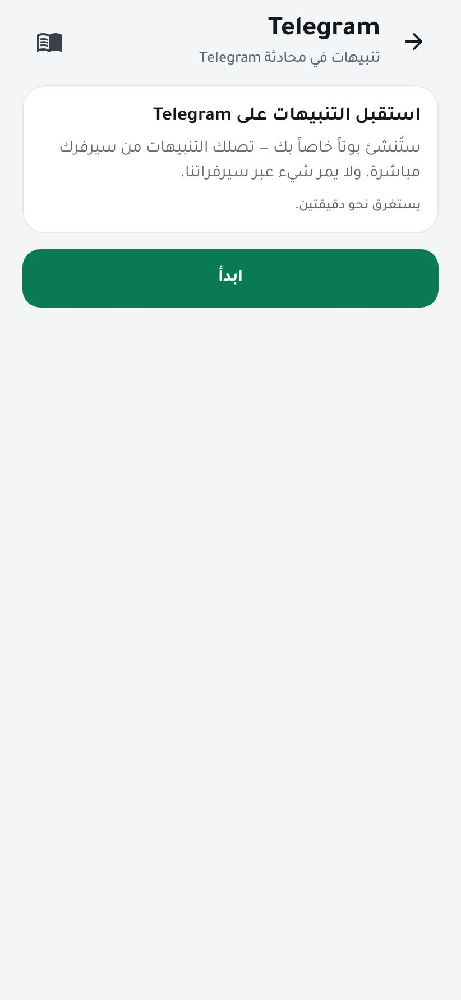
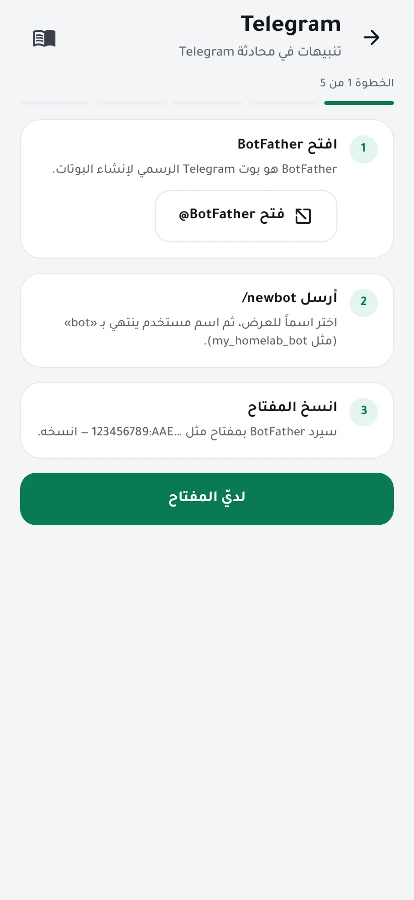
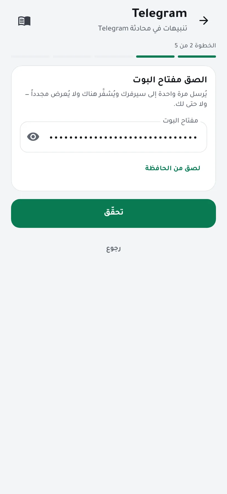
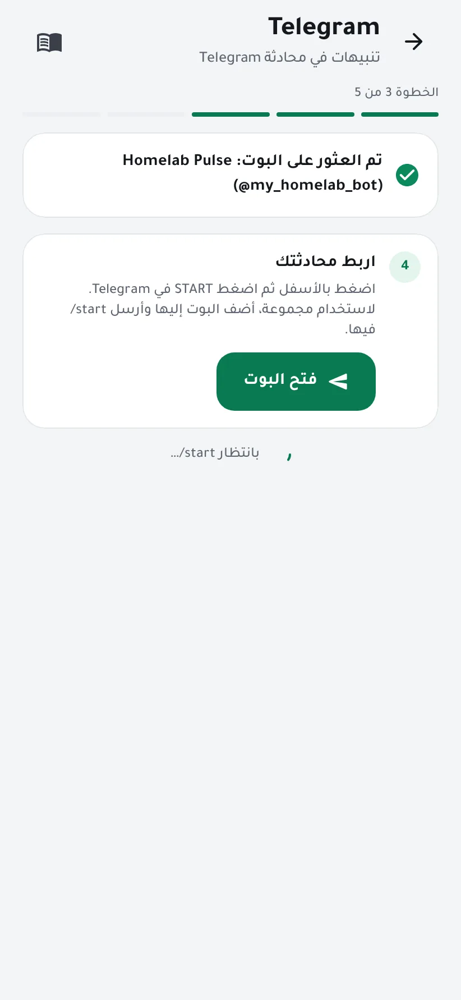
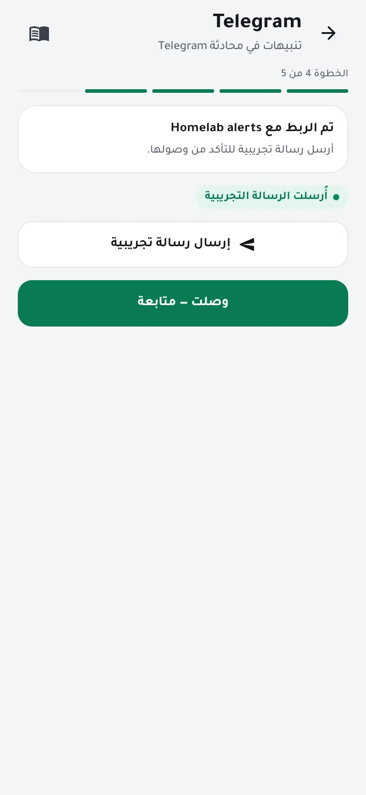
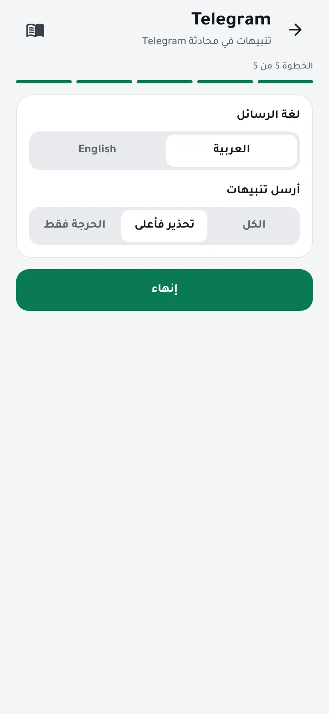
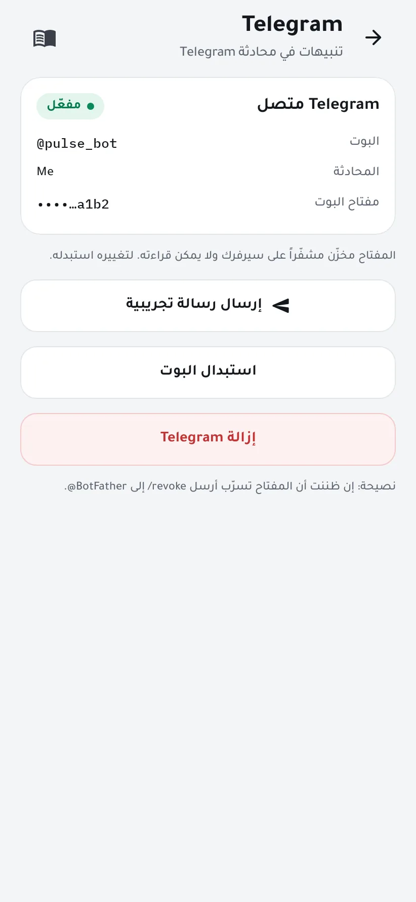

استقبل التنبيهات على Telegram
يرسل سيرفرك تنبيهاته إلى محادثة في Telegram عبر بوت تنشئه وتملكه بنفسك. تصل التنبيهات من سيرفرك إلى Telegram مباشرة، ولا تمر عبرنا أبداً. يستغرق ذلك نحو دقيقتين.
تحتاج إلى
- تطبيق Telegram على هاتفك.
- هاتف بصلاحية مسؤول في Homelab Pulse.
- اتصال من سيرفرك بالإنترنت يصل إلى Telegram (
api.telegram.org).
-
افتح المعالج
افتح الإعدادات ← Telegram واضغط ابدأ.

-
أنشئ بوتك عبر BotFather
اضغط فتح @BotFather، وهو بوت Telegram الرسمي لإنشاء البوتات، وأرسل
/newbot. اختر اسماً للعرض، ثم اسم مستخدم ينتهي بـ «bot»، مثلmy_homelab_bot.سيردّ BotFather بمفتاح مثل
123456789:AAE…. انسخه، ثم اضغط لديّ المفتاح.
-
الصق المفتاح
زر لصق من الحافظة يملأ الحقل ويمسح الحافظة. اضغط تحقّق.
يُرسل المفتاح مرة واحدة إلى سيرفرك ويُخزَّن هناك مشفّراً، ولا يُعرض مجدداً، ولا حتى لك.

-
اربط محادثتك
اضغط فتح البوت، ثم START في Telegram. يلتقط المعالج ذلك خلال ثوانٍ.
لاستخدام مجموعة بدلاً من ذلك، أضف البوت إليها وأرسل
/startفيها.
-
أرسل رسالة تجريبية
اضغط إرسال رسالة تجريبية. وعندما تصل في Telegram اضغط وصلت — متابعة.

-
اختر اللغة ونوع التنبيهات
اختر لغة الرسائل، ثم إرسال كل التنبيهات، أو التحذيرات فأعلى، أو الحرجة فقط. اضغط إنهاء.

-
انتهى
أصبح Telegram متصلاً. ومن الصفحة نفسها يمكنك إرسال رسالة تجريبية أخرى، أو استبدال البوت، أو إزالة Telegram.

معلومات مفيدة
- لا يردّ البوت إلا على المحادثة التي ربطتها، ويتجاهل رسائل أي شخص آخر.
- إن ظننت أن المفتاح تسرّب، أرسل
/revokeإلى @BotFather، ثم اضغط استبدال البوت في التطبيق.
إن واجهتك مشكلة
- المفتاح مرفوض
- انسخ المفتاح كاملاً، بما فيه الأرقام التي تسبق النقطتين.
- لا يحدث شيء بعد START
- تأكد أنك فتحت بوتك أنت (راجع اسم المستخدم) وضغطت START. وفي المجموعة أرسل
/startبعد إضافة البوت. - الرسالة التجريبية لا تصل
- يحتاج سيرفرك اتصالاً بالإنترنت يصل إلى
api.telegram.org.